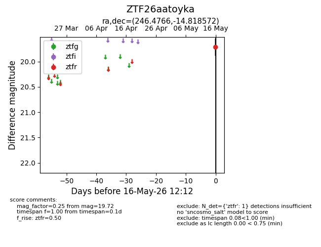
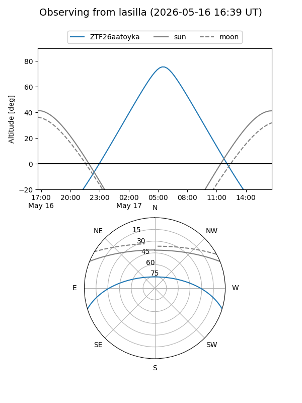
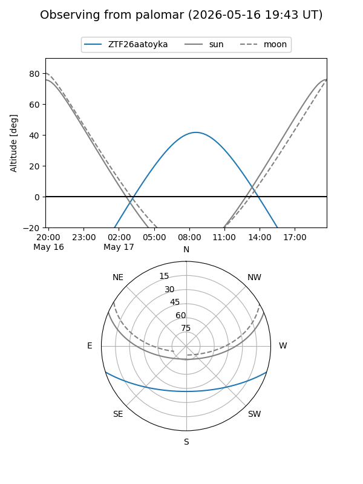

ZTF26aatoyka
Target ZTF26aatoyka at 2026-05-16 12:14
Aliases and brokers:
FINK: link
Lasair: link
ALeRCE: link
alt names
ZTF26aatoyka (ztf,fink_ztf)
Coordinates:
equatorial (ra, dec) = 246.4766,-14.81857
equatorial (HMS+DMS) = 16:25:54.39,-14:49:06.86
galactic (l, b) = (0.7853,+23.18749)
Flags:
Photometry:
last ztfr=19.72
1 ztfr detections
Lightcurve

Visibility


Additional plots